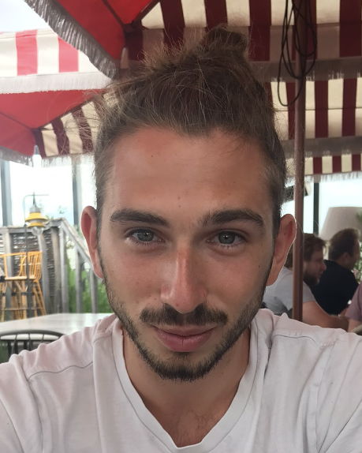

Hippolyte Dreyfus
Research engineer in neuroscience
Hi there! I'm a research engineer and project builder working at the intersection of neuroscience and impact-driven entrepreneurship.
I currently work at the Paris Brain Institute (ICM) on MRI pipelines and brain stimulation modelling.

Experience
Research Engineer
Institut du Cerveau (ICM), Paris
MRI pipelines and modelling of transcranial electrical stimulation (tES).
Founder, FeelBack
Mental health app designed to make it easier to integrate physiological data while keeping the patient at the center of their own care.
Founder, Wing4All
Micro-business renting wingfoil equipment, with the aim of making wingfoiling more accessible.
Research Engineer / PhD
CEA-Neurospin and Sainte-Anne Hospital
Acquisition and analysis of MEG and 7T MRI data for Explore+, a project on the processes underlying human decision making under uncertainty. Supervised by Florent Meyniel and Alexander Paunov.
Research internships
6 months
LIS, Laboratoire d'Informatique et Systèmes
Supervised by Thierry Artières
Deep learning and representation learning of the auditory cortex (PyTorch, TensorFlow, Chainer).
5 months
ISIR, Institute of Intelligent Systems and Robotics
Supervised by Benoît Girard
Modelling of basal ganglia circuits and of the role of dopaminergic circuits in the explore/exploit trade-off (Python, ANNarchy).
3 months
ICM, Physiology of cortical microarrays team
Supervised by Joana Lourenco and Alberto Bacci
Morphological and electrophysiological characterization of CB1+ neurons of layer 1 of the mouse cortex (confocal microscopy, patch-clamp, Matlab).
2 months
ICM, Cognitive Control – Interoception – Attention team
Supervised by Liane Schmidt
Bayesian analysis (MCMC) of a food decision experiment, modelled with a drift-diffusion model.
Education
AgroParisTech
Health Engineering curriculum, with a gap year in neuroscience. Specialization in data science, artificial intelligence and bioinformatics.
CPGE BCPST Agro-Véto
Lycée Janson de Sailly, Paris
Baccalauréat S, with highest honors
École Alsacienne, Paris
Skills
A generalist profile: I move between the scanner, the cluster and the browser, and like to build things from the experiment to the application.
MEG and 7T MRI acquisition and analysis, EEG, brain stimulation modelling (SimNIBS, FreeSurfer), and bench techniques such as patch-clamp and confocal microscopy.
Neural population models (ANNarchy), reinforcement learning, Bayesian inference and drift-diffusion models.
Deep learning (PyTorch, TensorFlow), Bayesian networks, data mining and web scraping.
Flask, React and Docker, used to build web applications end to end.
BIDS pipelines, SLURM on HPC clusters, Linux and macOS environments.
Behavioral task design with PsychoPy and Expyriment.
Python, SQL, R, bash, JavaScript, HTML, Matlab.
Founding and running small ventures, organizing events.
Projects
Languages and interests
French, English, Spanish.
Dance (organizing dance shows, coaching the AgroParisTech cheerleading team), piano, sailing, climbing, and competitive tennis (assistant instructor).
Contact
I am always open to new collaborations and conversations.